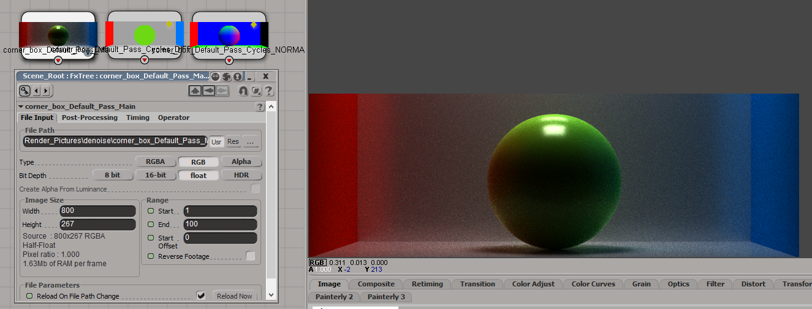

FX Denoise v.1.1

Last update: 19.04.2020
Description: This is the FX Tree node for denoising images, which rendered by ray-traced renderer (Arnold, Cycles, LuxRender, Indigo Render and so on). This node implement Intel Open Image Denoise library.
Download: FX Denoise node, sources on the GitHub
How to install: Nodes for FX Tree can't be installed by using general *.xsiaddon file. Instead you should copy downloaded *.dll file into C:\Users\user_name\Autodesk\Softimage_2015\Application\fx\ufos\ folder. All nodes inside this folder will appear in Plugins [U] category.
This addon requires some additional libraries, which may not be included into Softimage by default.
- You should download tbb.dll file and copy it into C:\Program Files\Autodesk\Softimage 2015\Application\bin folder.
- Also the addon requires vc14 runtime in your system. If you does not have it, download Visual C++ Redistributable for Visual Studio 2015 package from here and install it (or google by keywords "vc14 runtime").
How to use: Step 1: switch layout to Compositing

Step 2: add node for loading image by choosing Ops - Image - File Input

Step 3: select any image. Switch it Type to RGB and Bit Depth to float. Also you can add additional albedo pass and normal pass
Step 4: add denoising node by choosing Ops - Plugins [U] - FX Denoise
Step 5: connect loaded images to inputs of the denoising node. The first input is for color (beauty pass), second for the albedo (diffuse color pass) and the third for the normal. Denoising node contains five parameters:
- HDR should be turned on if the loaded image has a hdr-format (*.exr, *.tiff and so on)
- sRGB should be turned on if the image has a ldr-format (*.png, *.jpg and so on) and contains gamma correction
- Set Affinity is more technical parameter, for stability purpose it should turned off
- Filter can be RT (for any general image) or RT Lightmap (for lightmaps)
- Weights Path is a full path to the *.tza file, which contains custom data for denoising neural network. How to generate this data explains on the OpenImageDenoise GitHub page. This parameter is optional